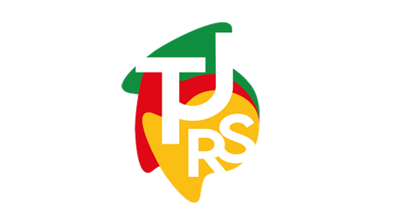

Pular para o conteúdo

SISEGP
Escritório de Gestão de Projetos
0
AC
Antônio Cepa
Chefe do EGP
Antônio Cepa
Chefe do EGP
Meu perfil
Sair
Preparando o portfólio…
Pesquisa global
Esc
SISEGP
Confirmação